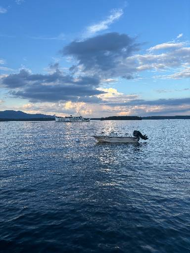

IP address:100.0.244.113Hometown:Lexington, MALake Winnipesaukee, NH:

I've been going to Bear Island on Lake Winnipesaukee for years now every summer. It is so beautiful and peaceful there. It's also my favorite place to go fishing!
Favorite Restaurant: Restaurant KarlaRestaurant KarlaI went to this restaurant when abroad in Copenhagen last semester and it's been my favorite ever since!Something no one would expect about me: